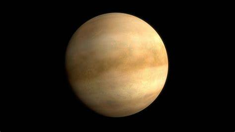
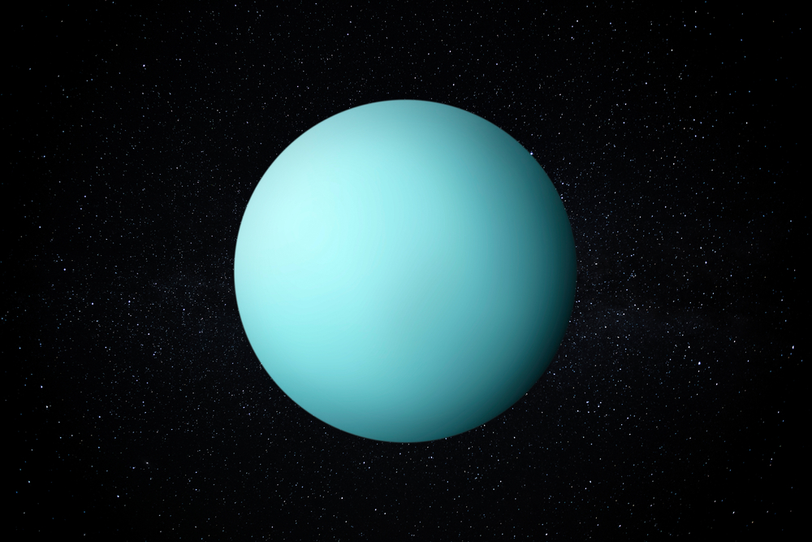
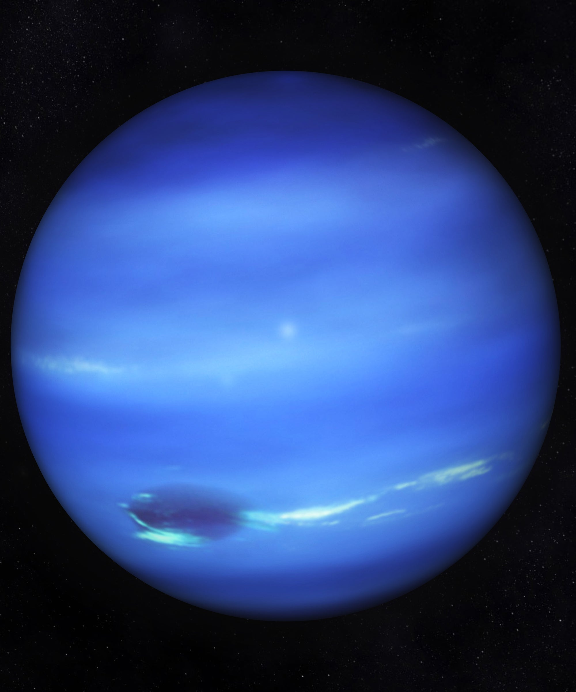

Sistemul solar
| Imagine |
Denumire |
Numar sateliti |
Masa |
Volum |
Aria suprafetei |
Densitate |
Temperatura la suprafata |
 |
Mercur |
0 |
3,3022 x 1023 kg |
6,083 x 1010 km3 |
75.000.000 km2 |
5,43 g/cm3 |
167°C |
|  |
Venus |
0 |
4,8690 x 1024 kg |
9,28 x 1011 km3 |
460.000.000 km2 |
5,24 g/cm3 |
456,85°C |
 |
Pamant |
1 |
5,9742 x 1024 kg |
1,083 x 1012 km3 |
510.000.000 km2 |
5,515 g/cm3 |
13,85°C |
 |
Marte |
2 |
6,4191 x 1023 kg |
1,7318 x 1011 km3 |
140.000.000 km2 |
3,490 g/cm3 |
167°C |
 |
Jupiter |
67 |
3302 x 1023 kg |
6083 x 1010 km3 |
75.000.000 km2 |
5,43 g/cm3 |
-46,15°C |
 |
Saturn |
62 |
5,6851 x 1026 kg |
8,27 x 1014 km3 |
44.000.000 km2 |
0,70 g/cm3 |
-139,15°C |
|  |
Uranus |
27 |
8,6849 x 1025 kg |
6,834 x 1013 km3 |
8.100.000.000 km2 |
1,30 g/cm3 |
-197,15°C |
|  |
Neptun |
14 |
1,0244 x 1026 kg |
6,254 x 1013 km3 |
7.700.000.000 km2 |
1.76 g/cm3 |
-201,15°C |